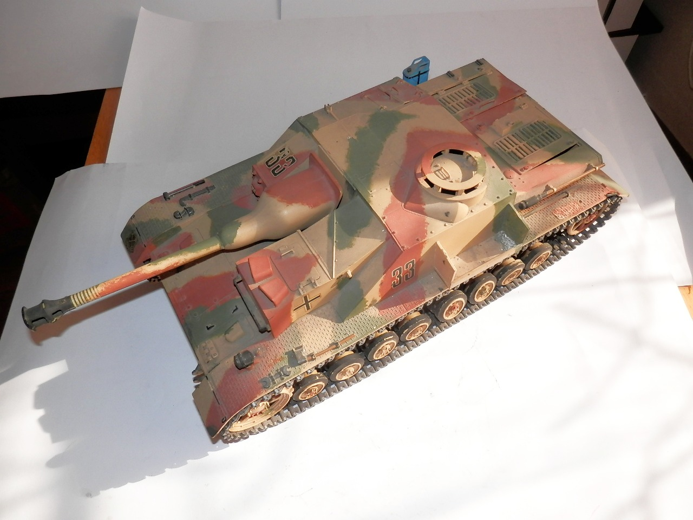
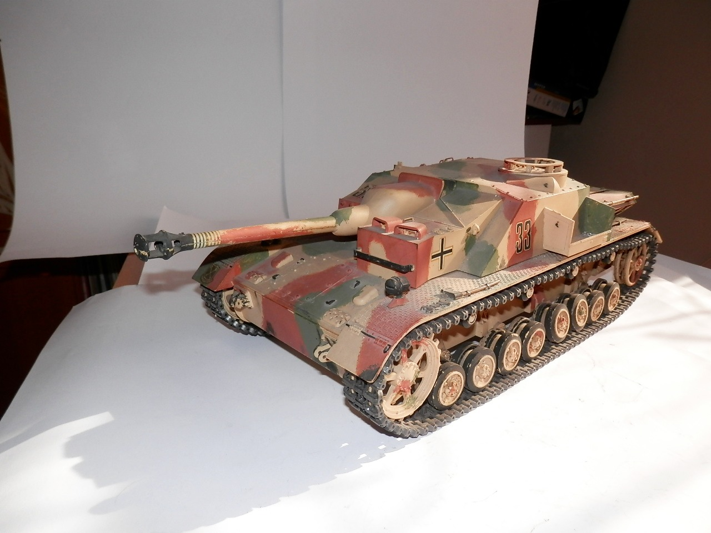
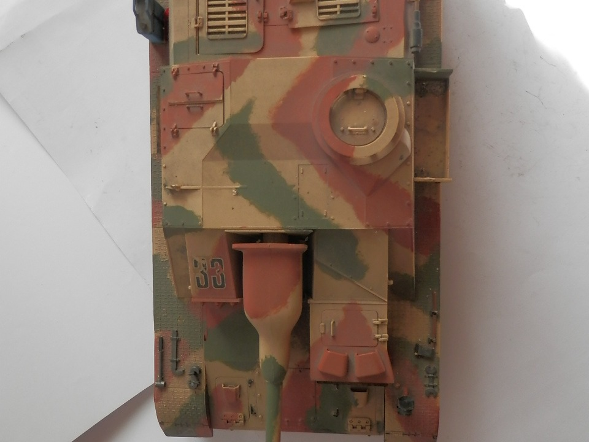
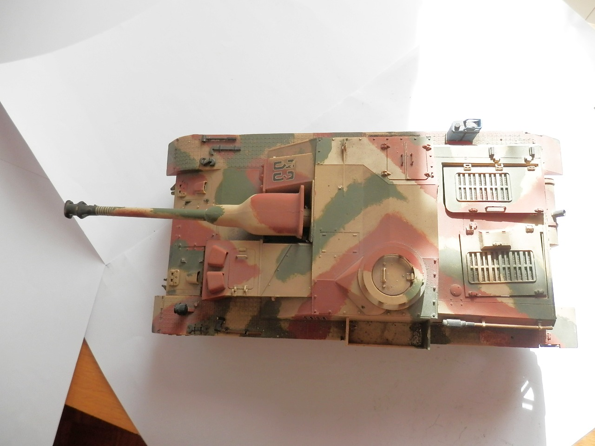
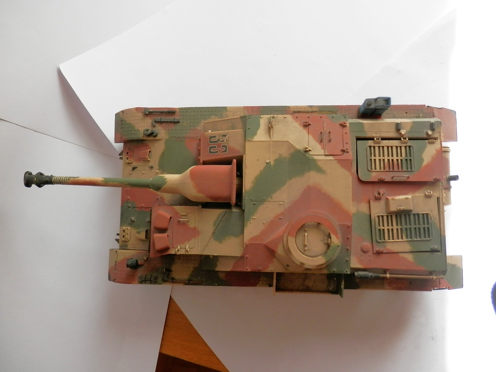
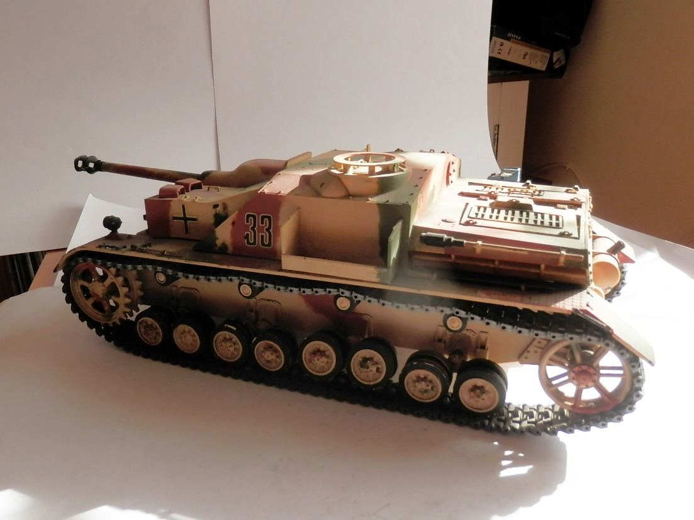
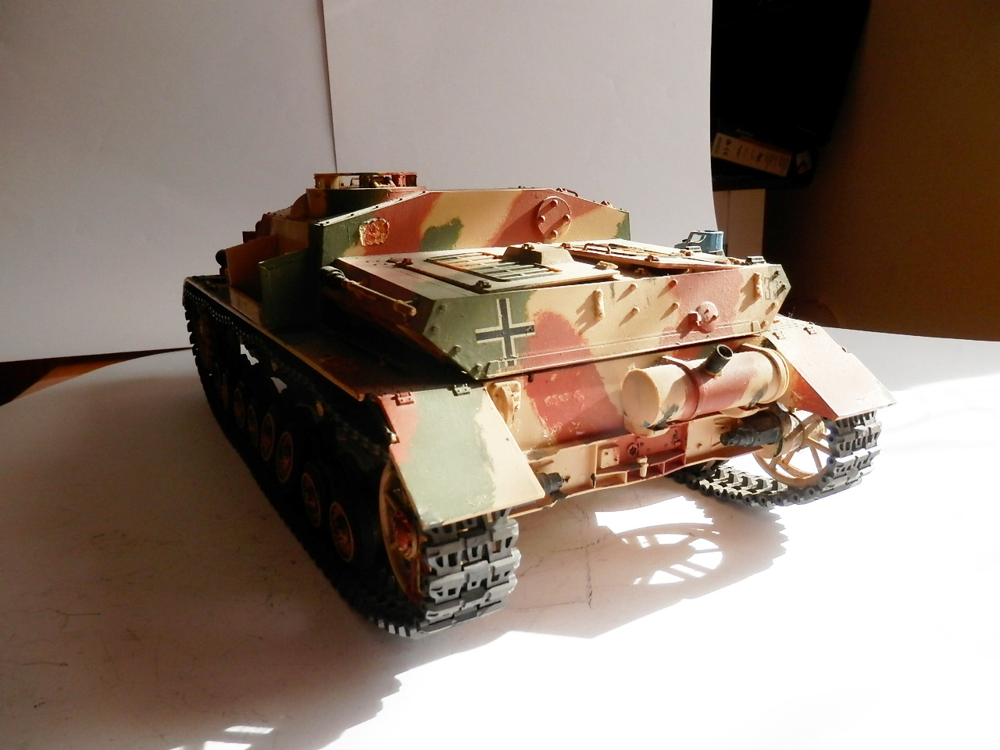

Mezzi militari · scale model archive
Sturmgeschütz IV (Sd.Kfz. 167/ StuG IV)
Sturmgeschütz IV (Sd.Kfz. 167/ StuG IV) — Kit: Bandai, Scale: 1/16. At the time (1976) it was an amazing kit, one of the first big scale tanks, I made it…

Photo gallery






English description
At the time (1976) it was an amazing kit, one of the first big scale tanks, I made it radio-controlled, fascinating.
Descrizione italiana
All’epoca, nel 1976, era un kit sorprendente, uno dei primi carri in grande scala. Lo realizzai radiocomandato: affascinante.